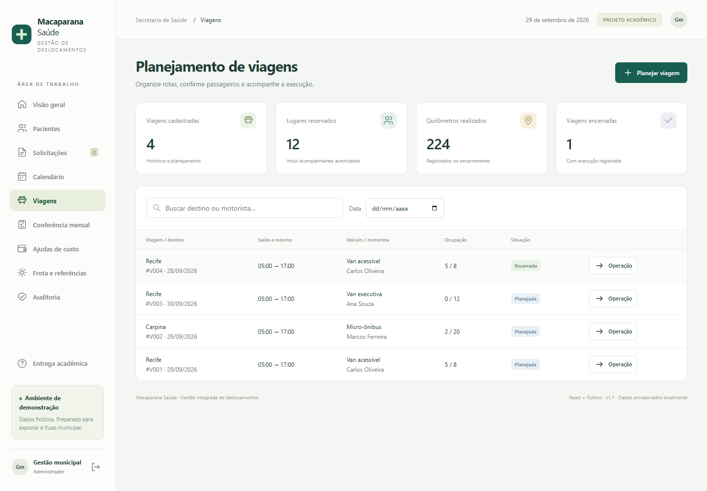
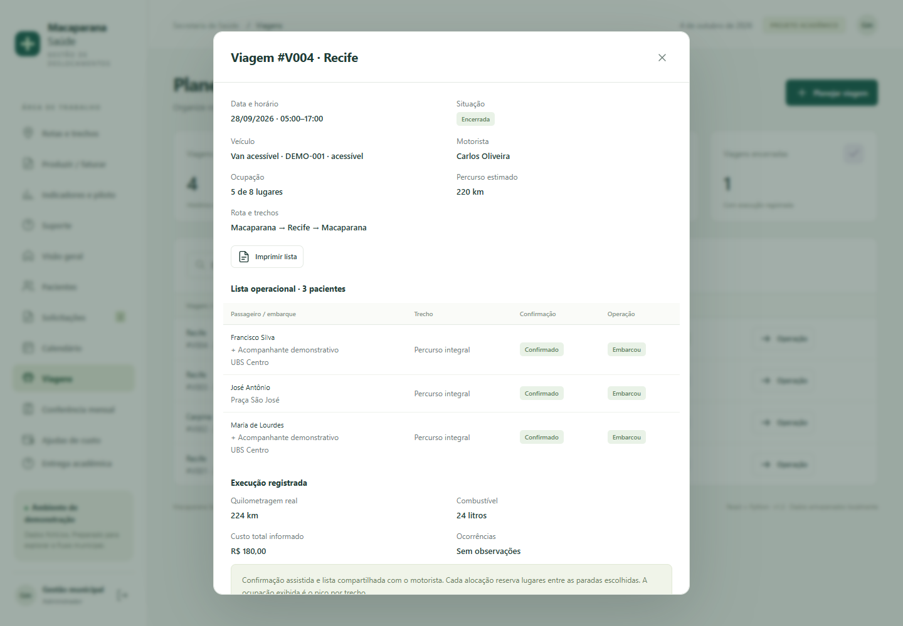
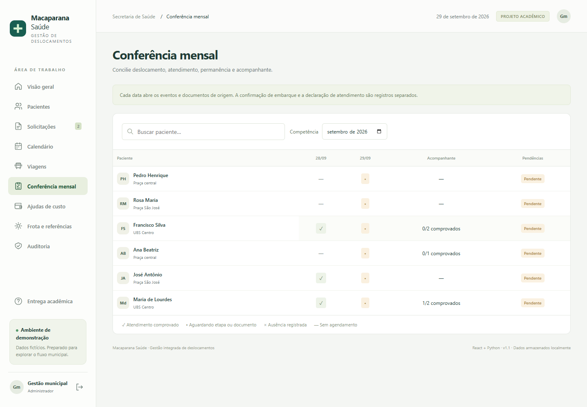

Apresentação Macaparana SaúdeMacaparana Saúde · projeto acadêmico
01 / 12
Macaparana Saúde
Gestão integrada de TFD, transporte sanitário e ajudas de custo
- Sistema funcional • documentação • protótipo navegável
- Python + React + SQLite
- Demonstração acadêmica com dados fictícios
Do pedido ao acompanhamento financeiro, com registros relacionados.
Macaparana Saúde · projeto acadêmico
02 / 12
O problema que orientou a solução
Acompanhar a pessoa e as etapas do processo
- Solicitar e autorizar atendimento fora do município
- Planejar datas, recursos e capacidade
- Conciliar viagem, documentos e benefícios
- Consultar origem, pendências e responsáveis
Resultados municipais precisam ser medidos em piloto; não foram presumidos.
Macaparana Saúde · projeto acadêmico
03 / 12
O fluxo integrado
Cada etapa mantém vínculo com sua origem
- Cadastro → solicitação → laudo → autorização
- Calendário → viagem → confirmação → embarque
- Declaração → conferência → benefício
- Contabilidade → registro de pagamento
Deslocamento, atendimento, benefício e pagamento são fatos distintos.
Macaparana Saúde · projeto acadêmico
04 / 12
Como foi construído
Interface, regras e persistência
- React: componentes, formulários e atualização das telas
- Python: API, sessão, permissões e regras
- SQLite: registros, documentos e auditoria
- Vite: frontend compilado para execução local

A entrega abre com Python e navegador; não exige Node.js para apresentar.
Macaparana Saúde · projeto acadêmico
05 / 12
Autorização e calendário
Documentação e continuidade entre competências
- Cadastro reutilizável de paciente e referência
- Modalidades TFD e transporte sanitário separadas
- Autorização exige laudo e justificativa
- Agenda semanal ou avulsa, dentro da validade
A recorrência não duplica a mesma data para a mesma solicitação.
Macaparana Saúde · projeto acadêmico
06 / 12
Transporte por data e trecho
Capacidade que considera paciente e acompanhante
- Veículo, motorista e acessibilidade
- Conflitos de horário e validade de CNH
- Paradas ordenadas e reserva por segmento
- Alterações com justificativa e auditoria

Rotas e trechos amplia o planejamento; não há mapa nem rastreamento GPS.
Macaparana Saúde · projeto acadêmico
07 / 12
Operação e comprovação
Confirmar não significa comprovar atendimento
- Confirmação assistida alimenta a lista do motorista
- Embarque ou ausência antes do encerramento
- Quilômetros reais, litros e custos registrados
- Declaração independente para acompanhante

O canal WhatsApp apenas registra resposta obtida externamente; não envia mensagens.
Macaparana Saúde · projeto acadêmico
08 / 12
Conferência e financeiro
Pendências e etapas visíveis
- Tabela mensal compacta de pacientes e datas
- Documentos e permanência ligados à ocorrência
- Benefício demonstrativo sem duplicidade
- Calculado → aprovado → contabilidade → pago

Valores são ilustrativos. Registrar pagamento não transfere dinheiro.
Macaparana Saúde · projeto acadêmico
09 / 12
Preparação da produção
Área própria para o faturamento
- Ocorrência precisa estar conciliada
- Procedimento informado, quantidade e destino
- Exportação CSV com identificadores de origem
- Encaminhamento interno com protocolo
Preparação interna implementada; transmissão e leiaute oficial dependem de homologação.
Macaparana Saúde · projeto acadêmico
10 / 12
Indicadores, proteção e suporte
Ferramentas para acompanhar e aperfeiçoar a rotina
- Custos, km/l, embarques, ausências e pendências
- Medição com base, resultado, fonte e responsável
- Perfis, sessão, auditoria e backup consistente
- Materiais e registros de capacitação e suporte
O piloto municipal real ainda depende de participação e aceite da prefeitura.
Macaparana Saúde · projeto acadêmico
11 / 12
Como validamos
Evidências de execução local
- 27 testes automatizados aprovados
- Fluxo até pagamento testado no navegador
- Novos fluxos e telas de celular verificados
- Pacote extraído e iniciado em base limpa
Teste aprovado não equivale a homologação municipal, certificação ou cobertura total.
Macaparana Saúde · projeto acadêmico
12 / 12
Entrega e próximos passos
Base funcional para validação em campo
- Entregue: sistema, documentação, prints e código
- Homologar regras com as equipes municipais
- Obter interfaces e permissões das integrações
- Capacitar, executar piloto e medir resultados
A contribuição central é integrar o processo e suas evidências.